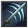
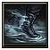
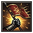
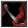
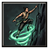
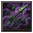

江湖设计令牌
《战场兄弟》武侠 Mod · 全局 UI 规范与组件库 —— 守原版暗调骨架，添明末武侠风骨
一 · 设计总纲五句话决定所有取舍
原版《战场兄弟》的辨识度来自深色皮革木纹 + 铜金细边 + 低饱和语义色 + 浅色羊皮纸读物。武侠化不是换一套亮色皮肤，而是把这套骨架的每个元素找到同构的中式对应物：皮革 → 乌木，铜边 → 鎏金回纹，羊皮纸 → 宣纸题签，红蜡封 → 朱砂印。
乌木为骨
交互面板一律深底
与原版人物界面背景同调，不再整面铺浅色宣纸，避免"网页贴片感"。
鎏金为界
金色只做结构
描边、分隔、选中态。金色不用于大面积底色，也不用于正文。
骨白为文
暖白文字分三级
标题 / 正文 / 说明三档亮度；数值永远用最亮一档。
朱砂为印
一屏只盖一枚印
朱砂红只给不可逆 / 高风险 / 当前最重要的那一个操作（洗髓、拼合、强修）。
石青为气
内息与"可行"
内息条、可装配、正向反馈共用石青，与战斗 HUD 内息条同源。
宣纸只用于"读物"：详览台书名题签、事件卷轴、城镇招牌、江湖名刺——玩家需要阅读的地方。
不要同时出现绿 / 蓝 / 紫 / 红四种胶囊按钮；不要在面板内重复放「× 返回」；不要小于 0.95rem 的字。
二 · 色彩点击色块复制 HEX
全部取自原版截图与现有 mod 贴图的采样再降饱和。语义色只有四个（金 / 青 / 朱 / 琥珀），品阶色与四脉色只出现在图标描边、小圆点、文字上，绝不做按钮底色。
乌木 · 表面层级由深到浅，越浅越"浮起"
鎏金 · 线条
骨白 · 文字
功能色朱砂 = 高风险主操作 · 石青 = 内息/可行 · 琥珀 = 警示 · 正负数值对齐原版
秘籍品阶大路货 / 门派上乘 / 绝学 / 江湖孤本
四脉武学与战斗 HUD 技能角标同源
资源条
内功路数
三 · 字体与字号明刻体只给 ≥ 1.55rem 的标题
沿用 mod 现有的 wx_ming_serif.ttf 明刻衬线体做大标题，正文保持原版黑体以确保小字锐利。字号共七档，最小 0.95rem（角标），不得再小。
江湖夜雨十年灯
洗经伐髓 · 林沧海
《清风连环剑》 兵甲行囊 · 武学修为 · 藏经阁
三重境界 · 大成门槛 · 常驻被动
清风剑派入室弟子的看家剑法，三剑一气呵成，专寻对手招架间隙。
门派上乘 · 外功 · 剑 · 二重小成 · 火候 210 / 360
新篇 · 阁藏 · 已习 · 3/5 · ×2 · 4 AP
四 · 间距 · 尺寸 · 阴影
间距阶梯0.2rem 起步，近似 1.5 倍递增
sp-1
0.2sp-2
0.4sp-3
0.6sp-4
0.8sp-5
1.2sp-6
1.6sp-7
2.4
0.2sp-2
0.4sp-3
0.6sp-4
0.8sp-5
1.2sp-6
1.6sp-7
2.4
- 控件统一高度 2.5rem（小号 2.1rem）
- 仓库格位 6.2rem，招式图标 3.8rem（HUD 内 4.8rem）
- 圆角 0.15rem —— 原版近乎直角，武侠感由回纹角承担而非圆角
阴影与辉光
well
凹井
凹井
raise
浮起
浮起
glow-gold
选中
选中
glow-jade
可放置
可放置
glow-cinnabar
警告
警告
- 凹井 = 可放东西的位置（格位、进度条槽、输入框）
- 辉光只用于状态（选中 / 可拖放 / 危险），不做装饰
五 · 基础组件人物界面三页签直接使用的同一套
按钮默认 / 主要 / 朱砂印 / 幽灵
取出研习 · 传授一键拼合2名刺已习
化功装入装帧成书带图标×
- 主要（鎏金描边）= 当前推荐操作，可多个
- 朱砂印= 不可逆 / 消耗稀有资源，一屏至多一个
- 关闭统一用方形朱砂印「×」，放在面板 / 弹窗右上
页签与筛选
主页签（明刻体，选中下方亮金线 + 角标）兵甲行囊武学修为1藏经阁2
子页签 · 图标切换 · 搜索
已习武学8阁藏直学5随身灵丹11

复选 · 开关
契合兵刃 仅看未习 自动入阁 自动入阁
状态章 · 角标 · 品阶印
◆ 阴柔内息调和散功 2 天服丹外伤 ×1敷药
 新篇
阁藏
已习
2/5
新篇
阁藏
已习
2/5
 可拼
大
可拼
大路 上
乘 绝
学 孤
本
- 角标统一左上，按新篇（石青）→ 阁藏/已习（金）→ 残页（靛）→ 可拼（朱砂）的优先级只显示一个
- 品阶色只上格位描边 + 内辉光，不铺底色
进度条 · 境界刻度 · 招式图标
资源条（凹槽 + 高光填充 + 描边数值） 火候细条 · 三重菱形（一重 / 二重 / 大成 / 残本）
418
315 4
525
414详览台乌木绢本 + 宣纸题签 + 三重时间线
《清风连环剑》
上乘
◆ 契合当前主手：剑
三重境界
一重 · 入门
武艺 +2；习得「清风三连」。
武艺 +2；习得「清风三连」。
二重 · 小成
武艺 +4，招架 +2；习得「寻隙刺」。
武艺 +4，招架 +2；习得「寻隙刺」。
三重 · 大成
武艺 +5，招架 +3，穿甲 +10%。
武艺 +5，招架 +3，穿甲 +10%。
大成门槛
✗ 武艺 75 / 78 （差 3）
✓ 身法 121 / 110
灌注火候卸下
六 · 全局界面应用同一套令牌落到其他界面
以下是令牌在人物界面之外的落点示意，均可在 wx_global_theme.css / wx_ui_global_overhaul.js 现有挂点上替换样式，无需新增 DOM 结构。
《回锋惊鸿剑》
绝学 · 外功 · 剑 · 藏经阁 ×1
剑出如惊鸿回锋，后发先至。以反击架势见长，大成可发三格剑气。
大成：武艺 +7，招架 +5
门槛：身法 106 / 115
估价 3300 两
右键：给当前侠客研读 · 队中 0 人已习
悬浮提示：沿用 mod 现有深色 tooltip 贴图的配色；标题栏紫檀漆 + 明刻书名，正文每行左侧原版 16px 图标，底部灰字操作提示。数值正负直接用
--wx-pos / --wx-neg。卸下功法重数火候永久保留×
将从穴二卸下《清风连环剑》（二重 · 小成）。
卸下触发 散功调息 2 天：内息上限 -15、回气 -3。
取消确认卸下
通用弹窗：乌木对话框 + 双线鎏金框 + 紫檀标题栏，替代现有宣纸弹窗。说明区用琥珀左边条表示代价、石青左边条表示保留/收益。确认按钮视风险决定用主要还是朱砂。
大地图顶栏：资源用竖向金色细线分隔，数值最亮、单位最暗；低于安全线变琥珀。日期用明刻体。「江湖名刺」从现有宣纸牌匾改为与面板一致的乌木按钮，避免顶栏出现唯一一块浅色。
第三回 · 夜宿荒祠
山雨欲来，众人避入一座破败的山神祠。供桌下压着半卷油纸包裹的残册，墨迹已被潮气洇开，隐约可辨「惊鸿」二字。
柳青眉俯身细看，忽听祠外竹林中传来一声极轻的剑鸣。
获得《回锋惊鸿剑》残页 ×1 柳青眉 定力 -3
收好残页，连夜赶路（安全）
循剑鸣入林一探（柳青眉 · 退隐老剑客）
事件卷轴：全游戏唯一保留整面宣纸的地方（原版羊皮纸的同构物）。章回朱砂印、首行缩进两字、选项前菱形标、出身专属选项在括号内注明。正负结果用原版深绿 / 深红。
墨香书肆
新篇2,200
阁藏370
已习400
4/5680
可拼420
可拼420
典籍入阁3
城镇商肆：招牌是"读物"，保留宣纸 + 朱砂左边；商品格与人物仓库同一套角标，玩家在任何界面看到「新篇」都知道是藏经阁里没有的书。
战功名录剿灭黑风寨 · 大胜
柳
柳青眉 · 8 级
斩敌 3 · 承伤 24 · 《清风连环剑》火候 +42
林
林沧海 · 7 级
斩敌 1 · 承伤 38 · 外伤：左臂割伤
外伤战后结算：每行一人，右侧只放一个最重要的状态（升级开穴 / 受伤 / 阵亡），火候增长用石青数字。
418
 415
320
415
320
415
320

315 4
310战斗 HUD：AP 条按格切分——金格 = 常人 9 AP，亮金格 = 孤本常驻 +1，虚线金格 = 临时爆发（12~13 AP），暗格 = 已用。招式四脉色角、右上 AP、右下内息，与人物界面招式栏完全一致。
七 · 移植对照表CoherentUI 不支持 CSS 变量 → 构建时替换为字面值
建议在 tools/build_mod.py 里增加一步：读取本文件 :root 中的变量表，把 mod_wuxia/ui/**/*.css 里的 var(--wx-*) 文本替换为字面值后再打包。这样源码可读、游戏内零兼容风险。下表由页面实时读取 wx_tokens.css 生成，点击行复制。
| 令牌 | 字面值 | 分组 |
|---|
布局：absolute / float / inline-block；禁止 flex、grid、gap、calc()。
竖排文字：逐字 <br>，不依赖 writing-mode（书架书脊、品阶印）。
回纹角：:before / :after 两个 L 形边框即可，不需要额外贴图。